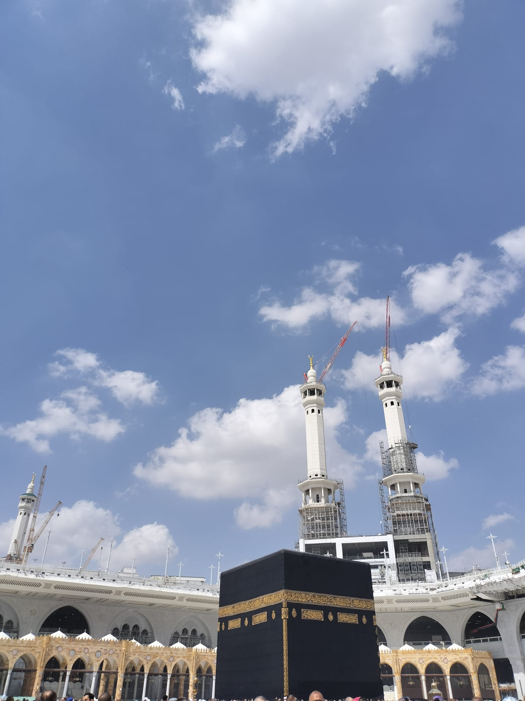

Solusi praktis umroh dari Jepang. Kami merancang paket yang fleksibel, terjangkau, dan sesuai budget Anda. Tersedia layanan Jasa Visa hingga pendampingan penuh.
Makkah Al-Mukarramah
--:-- --°C
Madinah Al-Munawwarah
--:-- --°C
Panduan persiapan keberangkatan khusus dari Jepang.
"Umroh ke umroh berikutnya adalah penghapus dosa di antara keduanya..."
HR. BUKHARI & MUSLIM
Memahami 4 rukun ibadah Umroh sesuai tuntunan Rasulullah ﷺ.
Berniat memulai ibadah umroh dari batas tempat (Miqat) yang telah ditentukan. Bagi laki-laki wajib memakai 2 helai kain ihram tanpa jahitan. Mulai saat ini, berlakulah larangan-larangan ihram.
لَبَّيْكَ اللَّهُمَّ عُمْرَةً
"Aku penuhi panggilan-Mu ya Allah untuk melaksanakan umroh."
Perjalanan ibadah yang nyaman, fleksibel, dan bersahabat dengan kantong pekerja Jepang.
Sangat bisa. Kami akan memandu secara penuh pengurusan Tourist e-Visa atau Visa Umroh khusus menyesuaikan dengan paspor Indonesia Anda dan status domisili di Jepang. Prosesnya cepat dan transparan.
Tentu. Kami menyediakan fleksibilitas. Jika Anda memiliki budget khusus, kami bisa mengaturkan hotel Bintang 3 atau 4 yang bersih dan nyaman, namun tetap mengutamakan kualitas ibadah Anda.
Tentu. Edukasi ibadah adalah prioritas kami. Kami menyediakan sesi manasik eksklusif yang dibimbing langsung oleh Asatidzah bermanhaj lurus sesuai tuntunan Rasulullah ﷺ.
Informasi program dan dokumentasi layanan kami.
Proses transparan dan mudah, khusus untuk domisili Jepang.
Hubungi kami untuk menentukan paket, budget, dan jadwal cuti keluarga Anda.
Kami memandu persiapan dokumen dan pengurusan Visa secara praktis, menyesuaikan paspor dan domisili Jepang.
Mengikuti kajian manasik sesuai tuntunan Rasulullah ﷺ agar ibadah tepat dan mabrur.
Terbang dengan tenang dari Bandara Haneda, Narita, atau Kansai menuju Tanah Suci.
Pilih Paket Full Service atau custom sesuai kebutuhan & budget Anda.
Silakan berkonsultasi, kami carikan solusi ibadah terbaik untuk kantong Anda.